Nori Shaders BE
A shaders for Minecraft: Bedrock edition with realistic theme and have some features like 3D volumetric and 2D plane clouds, atmospheric scattering, waterbump, underwater caustic etc..
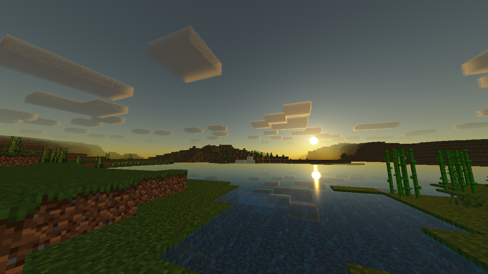
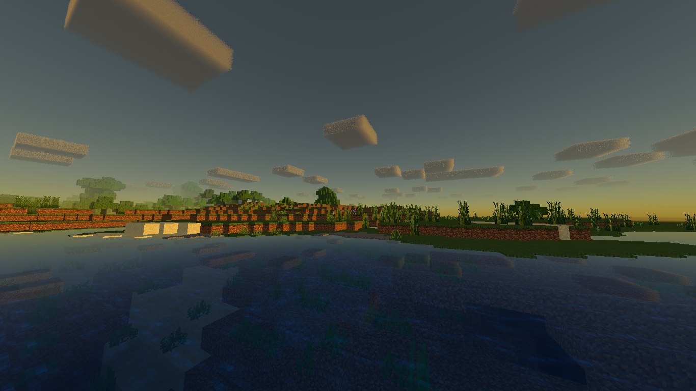
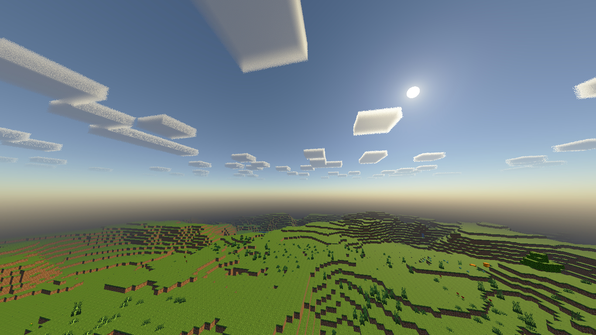
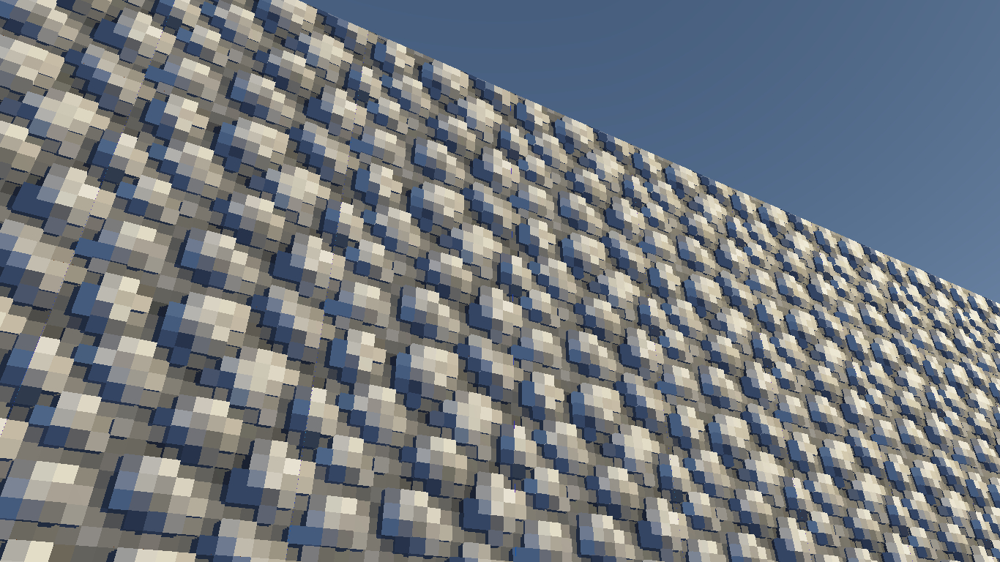
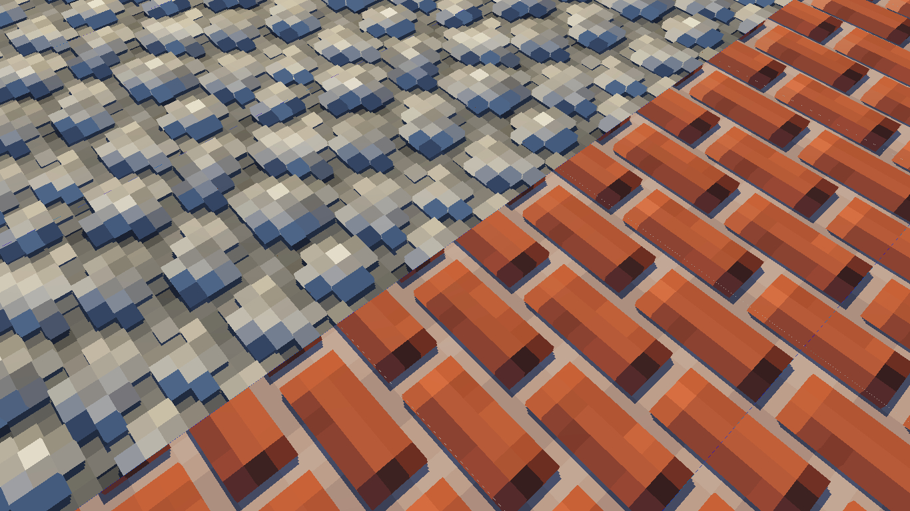
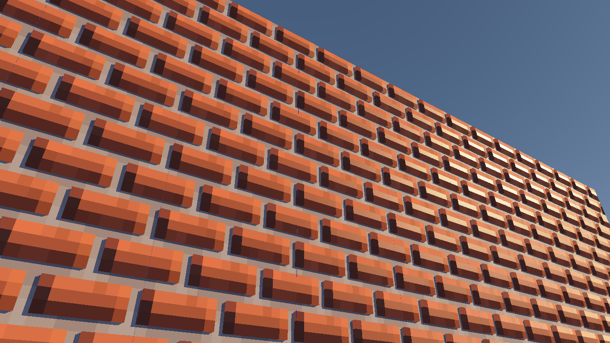
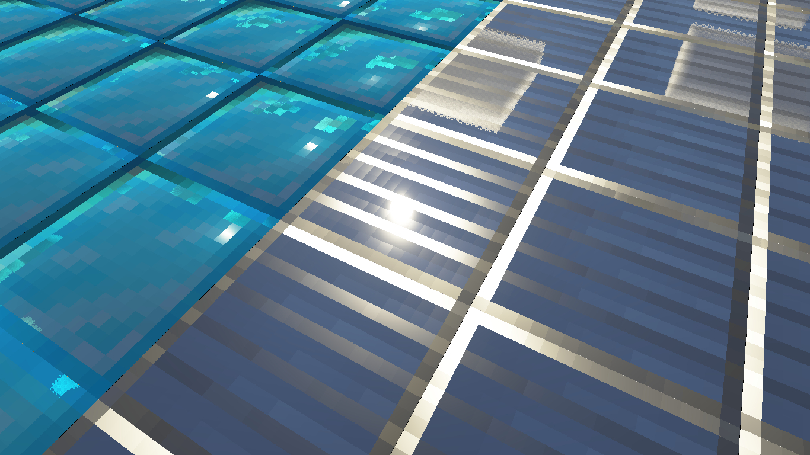
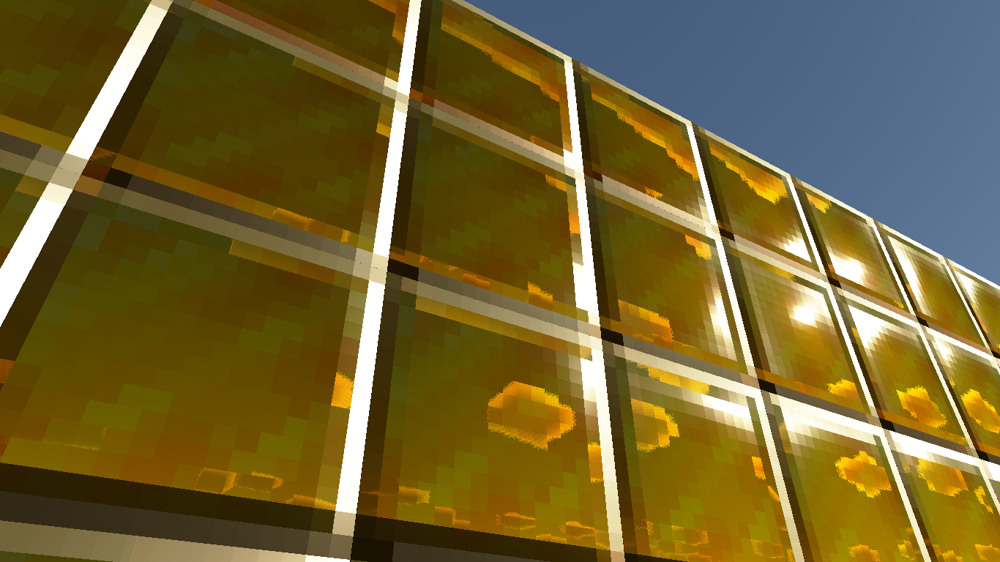
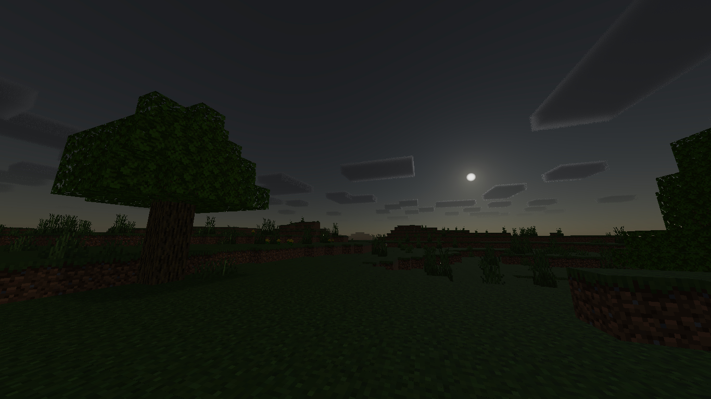
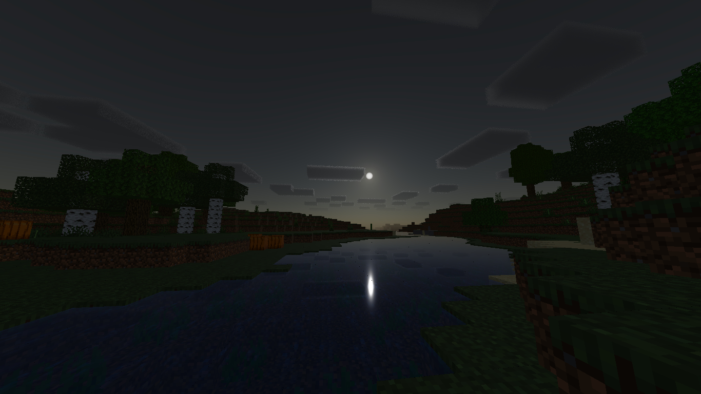
Changelog
there's nothing changed and added just some fix bug (maybe not completely)
Shader Settings / Configuration
you can configure the shader in "shader_settings.txt" file which is located in the shaders/glsl folder
PBR Configuration
by default the PBR feature in this shader is off / nonactive and to activate it Install the Nori PBR Base resource pack on top of the shader, then on top of that, install another texture that has the PBR feature
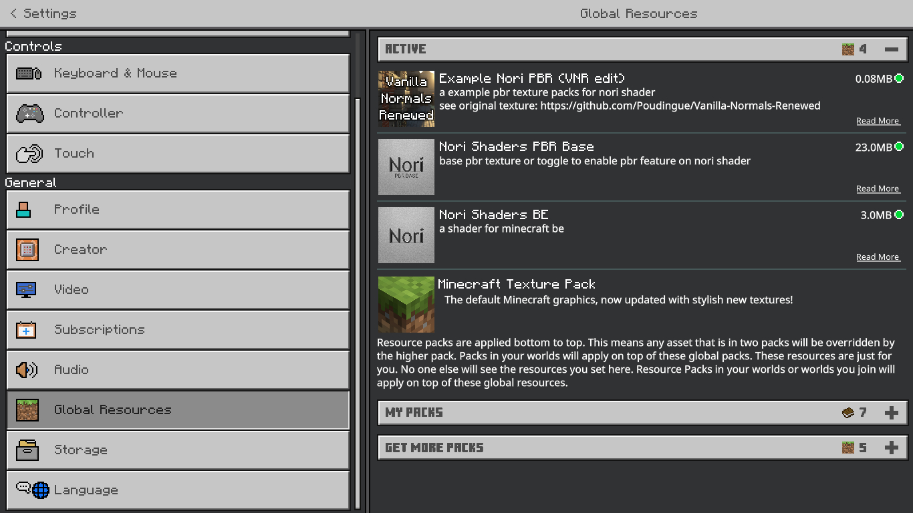
don't forget to set the texture resolution on Nori PBR Base match to another PBR texture resolution used on it and also restart minecraft to apply changes
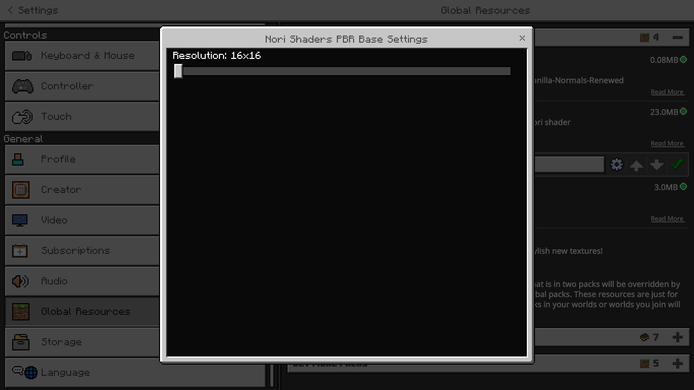
for texture pack creator
- This shader use minecraft Java edition PBR with oldPBR or labPBR format
- don't create or add terrain_texture.json in the texture pack
- each texture pack must have a PBR configuration file for nori shaders and stored in the root directory texture pack > shaders > glsl > nori_pbr_set.txt
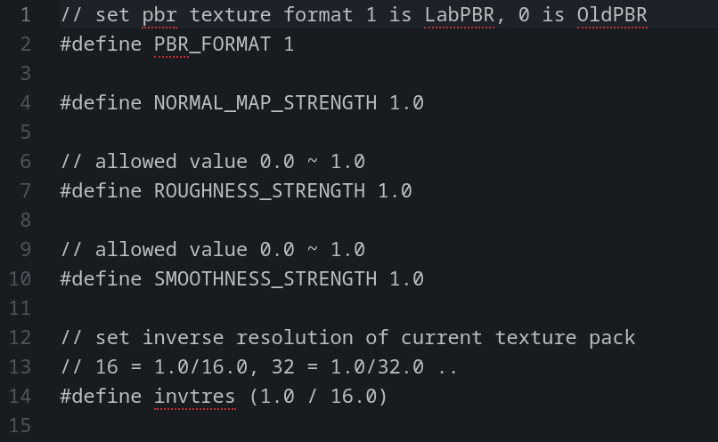
- grass_side_n and grass_side_s texture must be duplicated 16x and starting from grass_side0_n/_s and also if there is grass_side_snowed.tga and grass_side_snowed.png in this one directory, delete one of them
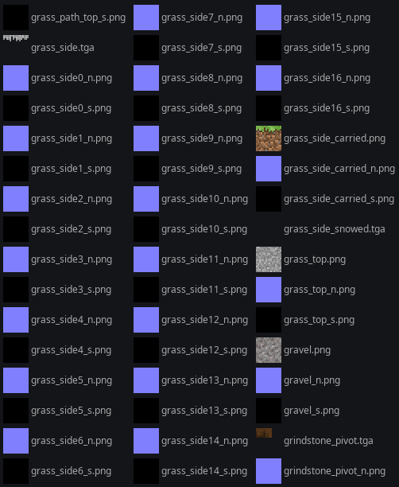
- each flipbook texture must have the same resolution (frame) as the normal map and specularity texture
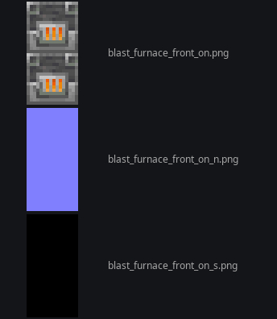
Note
- This shader is only recommended for high-end devices
- This shader is not support minecraft bedrock windows 10 32bit (not renderdragon version)
- This shader is not playable and the time cycle is not matched with minecraft default time, so this shader is not survival friendly.
- if you see weird lines between textures/blocks, of course i know that too and for now i can't fix that or maybe it can't be fixed
- the underwater part of this shader is still not changed
- Don't reupload the shader file, if you want to share it, just use this github page link
- Don't make this github page link or download link as a shortlink and activate some payment method on the shortlink
Download Shader
See My Activity on